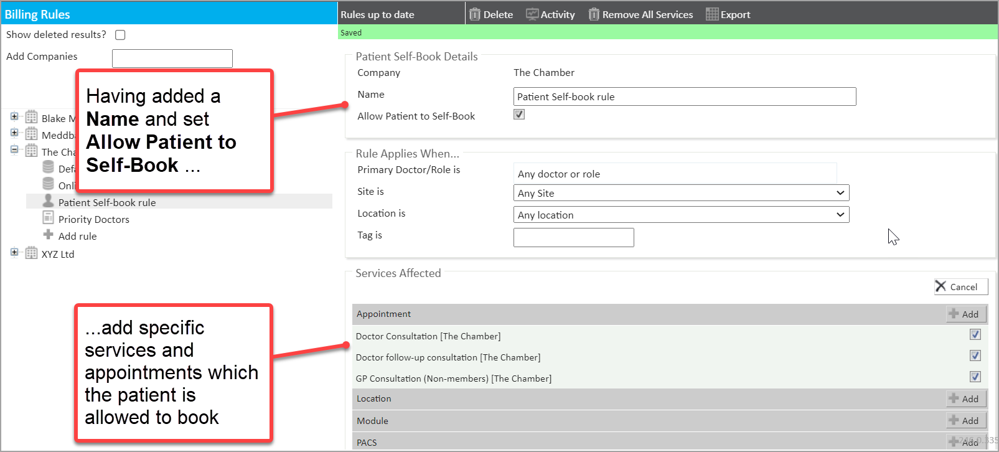

When patients want to book appointments online in the Patient Portal, they need to be placed on an online Charge Band. A key element of this set-up that defines the subset of appointment types they can book online is the Patient Self-Book rule.
This article will walk you through the steps of creating a new Patient Self-Book Rule.
The end-to-end configuration activities required for setting up an online Charge Band are described in the article Creating an on-line Charge Band.
1. From the Billing Rules page
2. Click + Add Rule from under the company
3. From the menu that appears, select New Patient Self-Book Rule...
A new Self-book rule appears on the right-hand side. This contains fields and features as explained below.
| Field / feature | What it does |
| Name | Set the name of the rule. |
| Allow Patient Self-Book | When ticked this will allow patients to book themselves into the specified services. |
| Provide Services When... | Primary Doctor is - Rule applies if a specific doctor is attending Site is - Rule applies if the appointment is at a specific site Location is - Rule only applies if the appointment is in a specific location Tag is - Rule applies if the 'Billing Tag' for a session is equal to the text field |
| Services Affected | Select which services patients will be able to choose from for self-booking |
4. In the Patient Self-Book Rule Details panel add a Name for the rule
5. In the Patient Self-Book Rule Details panel tick the box Allow Patient to Self-Book
6. In the Services Affected panel click on the +Show All button
7. Then click on +Add in the Services Affected panel and tick the Appointment types you wish to allow the patient to book via the Portal.

Only these selected appointments will then be available to these patients for booking on the Patient Portal.
That Modules, tests and procedures can also be added to the Patient Self-book rules. There is further configuration required as explained in the articles: